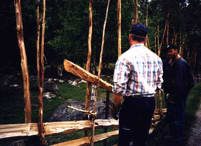
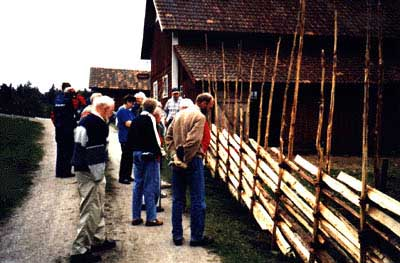
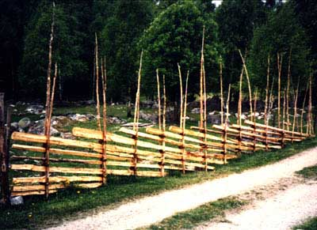

|
|
Välkommen till Barva! |
|


Att bygga sin egen gärdsgård.
I ägofredslagen från 1933, som fortfarande gäller, står det att läsa
| §1 | Var, som äger eller till underhåll eller utnyttjande mottagit hemdjur, vare pliktig att medelst hägnad eller vallning eller på annat sätt hålla sådan vård om dem, att de ej olovligen inkomma på andras ägor. |
Det är alltså viktigt att se till att ha bra stängsel. Nu behöver man ju inte krångla till det och bygga en gärdsgård men håll med om att det ser betydligt trevligare ut än både el-stängsel och taggtråd.



Ska nedan försöka att förklara hur man bygger en gärdsgård dvs en trägårdsgård av typen "långgärdsgård", med långgärdsgård menas att gärdslena skall gå igenom sju störpar.
Det finns således andra typer av gärdsgård tex. "Kortgärdsgård" där gärdslena går igenom tre störpar.
Långgärdsgården representerar den teknik som användes under senare delen av förra seklet och tidigt 1900-tal.
Först lite om materialet som man behöver:
En gärdsgård består av fyra huvudbeståndsdelar
Störar (att sättas i par)
- Gärdslen (de snett liggande slanorna)
- Vidjor (själva "låsmekanismen")
- Stöttor (för att stötta på lämpliga ställen)
En gärdsgård ska vara ca 120 cm hög, det ska vara ca 90 cm mellan störparen och det ska vara tre vidjor på varje störpar samt att det bör vara stöttor på var sjätte störpar.
Det ska sägas på en gång att nämnda mått är generella, det ska ni märka att när man väl kommer igång att bygga så får man improvisera en hel del. Det går kanske inte att få ner störarna exakt där man tänkt sig för att det är en sten just där, då får man långa eller korta avståndet efter behov, men man måste komma ihåg att gärdsgården blir "rankare" om man har för långt mellan störparen.
Hur mycket material går det då åt?
För 100 m gärdsgård räknar man med följande materialåtgång:
- 200 gärdslen (ca 4-5 m långa)
- 250 störar
- 325 vidjor.
Hur skall då materialet vara beskaffat.
Materialet ska enligt folktron huggas i månader med "r" i för att få lång hållbarhet. Detta gäller tills motsatsen har bevisats.
Störarna
Helst skall stammar från enbuskar användas för att få lång hållbarhet. Om det inte finns en att tillgå kan gran, gärna grenar, användas men det förekommer också att man använder ek eller tall.
Störarna ska vara betydligt högre än gärdsgården, detta för att de skall gå att återanvända vid eventuell reparation av gärdsgården.
Störarna ska spetsas från högst tre sidor. De skall barkas samt ansas i överänden.
Gärdslen
Gärdslena skall vara 4-5 meter långa och är nästan uteslutande av gran. Det är lämpligt att hålla sig till träd på en diameter under 30 cm i brösthöjd.
När väl stammarna kapats i rätta längder börjar ett något knepigt och arbetsamt moment dvs att klyva stammarna, vilket skall göras med kil och yxa. De grövsta bitarna kan klyvas till fyra bitar. Det sägs att gärdslena får en längre hållbarhet när de klyvs på detta sätt istället för att sågas. Dessutom ser det betydligt trevligare ut.
Vidjor
Till vidjor används grenar av gran, en, vide eller även björk. Grenen skall vara ca 120 cm lång och ca 20 mm tjock samt kvistas utom yttersta änden för att låsa vidjan då man börjar monteringen.
Materialet skall vara färskt dvs inte mer än något dygn gammalt för att det skall gå att arbeta smidigt med dem. Vidjorna skall dessutom före monteringen värmas för att kunna vridas och bockas runt störarna.
När allt virke är på plats påbörjas byggnationen.
Börja med att sätta ut störarna parvis på ett avstånd av 8-12 cm mellan varje stör samt 90 cm mellan störparen. Vänd störarna så att de pekar något utåt. Sätt dessutom parvis en längre och en kortare stör med den kortare stören på den sida varifrån byggnationen skall ske. Detta för att underlätta när man skall lägga i gärdslena mellan störarna.
Innan de första gärdslena läggs på plats sätts ett syftningssnöre upp för att få den rätta lutningen dvs från 120 centimeters höjd på det första störparet till markhöjd mitt emellan det sjunde och åttonde störparet.
Det allra första gärdslet läggs att vila på en sten av lämplig storlek vid första störparet och slutar sedan mellan andra och tredje störparet. Därefter läggs nästa gärdsle på som följaktligen kommer att sluta mellan tredje och fjärde störparet. Nu skall den första vidjan monteras på det första störparet.
Börja monteringen av vidjan med att låsa den på den bortre störet genom att sno vidjans tofsände om egen part något varv, lägg sedan vidjan i form av en åtta mellan störarna. Samtidigt skall vidjan tvinnas runt sin egen axel för att bli både smidig och starkare. Det är viktigt att samtidigt pressa ihop störarna ordentligt för att få ett hållfast förband.
Sedan är det bara att fortsätta med nästa gärdsle och nästa vidja som skall monteras på det andra störparet. Så fortskrider byggnationen med fler gärdslen och fler vidjor. Det kommer att vara två gärdslen mellan varje vidja på störparen, det kommer då att bli tre vidjor per störpar när gärdsgården har sin fulla höjd.
Tycker ni att det verkar intressant så är ni välkomna att höra av er så ställer jag gärna upp och visar.
Det har tyvärr inte blivit någon gärdsgård byggd denna sommar på grund av det torra vädret med eldningsförbud som följd. Men jag hoppas att kunna fortsätta nu i höst.
Det har alltid legat status i att göra ett fint jobb i detta speciella hantverkskunnande. Välskötta hägn gav framför allt gården status och vittnade om gårdens skötsel. Hägnen räknades som en betydande tillgång bl.a. när gårdarna bytte ägare.
Jag kan varmt rekommendera att läsa boken Gärsgår’n i vårt landskap av Sten Hagander. Det är en personligt skriven bok om gärdsgårdar och dess betydelse i vårt landskap, samt att det finns en utförlig byggbeskrivning.
Och kom ihåg att en gärdsgård ska byggas så att den håller för ekorrjägare, krösakärringar och annat löst folk..
Lycka till
Göran Rehn